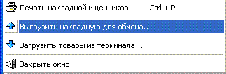

- Приходная накладная может быть выгружена в особые
файлы, которые можно перенести на подчиненную торговую точку и там
автоматически поставить на приход.
- 
- Каталог выгрузки указывается на вкладке
"Выгрузка" формы "Выгрузка/загрузка приходных накладных
(синхронизация)".
- Производится синхронизация на подчиненном
магазине в меню Сервис "Выгрузка/загрузка приходных накладных (синхронизация)"
главного окна программы (см.соответствущие разделы справки).
- После выгрузки открытой накладной на нее
устанавливается признак "Выгружена" и при попытке повторной выгрузки будет
выдано соответствующее предупреждение.
- Также после успешной выгрузки появляется
напоминание про то, чтобы пользователь не забыл выгрузить кроме приходных
накладных справочники, ведь в накладной могут быть товары, которых еще нет
на удаленной точке.
 База данных
подчиненного магазина похожа на базу основного магазина, однако различие
все же есть - для особой настройки обратитесь к разработчику (чтобы все
правильно работало, при первичной настройке синхронизации на подчиненной
точке сдвигают генераторы таблиц приходных накладных, журнала приходных
накладных и таблицы партий).
База данных
подчиненного магазина похожа на базу основного магазина, однако различие
все же есть - для особой настройки обратитесь к разработчику (чтобы все
правильно работало, при первичной настройке синхронизации на подчиненной
точке сдвигают генераторы таблиц приходных накладных, журнала приходных
накладных и таблицы партий).